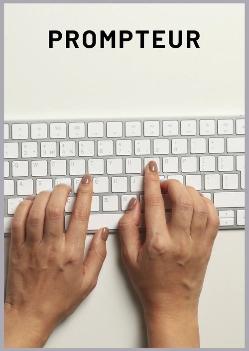
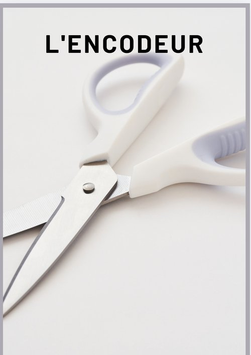
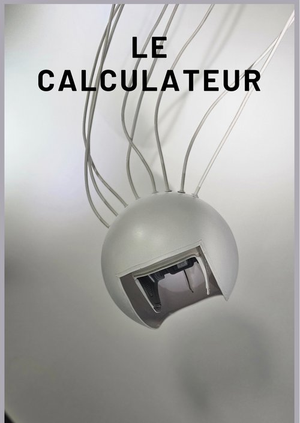

Parcours d’une requête
Module 2 · 7–10 ans (4–6P) · 20 min · 4 étapes · fiche à imprimer
Après une vidéo drôle, la classe suit le chemin d’une demande faite à un chatbot : par groupes, les élèves posent chaque carte étape sous le personnage qui la fait. Puis ils trient ce qui est vrai dans une vraie IA et ce qui n’est qu’une image.
L’idée à retenir : Entre la question et la réponse, il y a un chemin : des morceaux de mots, des nombres, un calcul, puis des mots. Elle calcule les mots les plus probables, un à la fois, puis en tire un au sort. Les personnages, c’est une image : c’est nous qui vérifions.




Claudia, enseignante, te guide étape par étape : les idées des élèves, la trace écrite, ce que l’activité simplifie.
Les cartes du jeu (PDF)Cette page à imprimer (PDF)
Objectifs
- Reconstituer le chemin d’une demande en plaçant ses étapes sous 4 personnages.
- Comprendre que la machine ne calcule qu’avec des nombres : un mot à la fois, elle calcule ce qui est probable et tire au sort parmi les plus probables.
- Distinguer ce qui est vrai dans une vraie IA de ce qui n’est qu’une image (les personnages), et savoir que c’est nous qui vérifions la réponse.
Notions
tokens · réseau de neurones · paramètres · ajustement par des humains · filtres
EN 22.4
La séance · 4 étapes · 20 min
La vidéo et les personnages · 5 min, en classe (peut se raccourcir) — Fais prédire, projette la vidéo, puis lis les 4 cartes personnages avec la classe.
- Avant la vidéo, fais prédire : « À votre avis, que se passe-t-il entre la question et la réponse ? »
- Projette « Dans la tête d’une IA, épisode 1 : Prendre sans comprendre » (QR code sur la fiche).
- Pose les 4 personnages au tableau, dans l’ordre du chemin : Prompteur, Encodeur, Calculateur, Rédacteur. Lis le rôle de chacun avec la classe.
- Dis : « Ces personnages, c’est une image : on verra ce qui se passe vraiment. » Si un élève dit que le Calculateur « cherche », ne corrige pas encore.
Ce qui doit ressortir : La classe connaît les 4 personnages et ce que fait chacun.
Le jeu de cartes · 8 min, par groupe — Chacun à son tour pioche une carte étape, la lit à voix haute et la pose sous le personnage qui fait cette étape.
« Avant de la poser : qui fait cette étape ? Pourquoi ? »
- Chaque groupe pose ses 4 cartes personnages en ligne et mélange les 16 cartes étapes, face cachée.
- À tour de rôle, un élève pioche une carte, la lit à voix haute et dit sous quel personnage elle va, et pourquoi. Le groupe en discute, puis la pose.
- Passe dans les groupes. Prompteur : choisir l’outil, écrire la requête, recevoir et vérifier la réponse, décider de continuer. Encodeur : recevoir la demande, la découper en tokens, les changer en nombres, les transmettre. Calculateur : le réseau de neurones, ce qui a été appris pendant l’entraînement, la probabilité des mots suivants, les réponses possibles. Rédacteur : les nombres changés en phrases, la mise en forme, la censure, l’envoi.
- Accepte une autre place si le groupe la défend avec une bonne raison (par exemple « nombres changés en phrases » sous l’Encodeur). À la fin, un groupe relit le chemin dans l’ordre.
Ce qui doit ressortir : Le chemin complet : la demande devient des morceaux de mots, des nombres, un calcul, puis des mots, et revient au Prompteur, qui vérifie.
Le jeu et la vraie IA · 4 min, en classe — La classe compare le jeu et une vraie IA, puis trie 4 phrases.
« Pareil dans une vraie IA, ou seulement dans le jeu ? Dites pourquoi avant de voter. »
- Demande à la classe : « Dans le jeu, 4 personnages font le chemin. Et dans une vraie IA, qui le fait ? » Écoute les idées, sans corriger.
- Lis les 4 phrases une à une. La classe dit pourquoi, puis vote : pareil dans une vraie IA, ou seulement dans le jeu ?
- « La demande est découpée en morceaux de mots, puis transformée en nombres » : pareil. « Le Calculateur cherche la réponse dans ses données » : seulement dans le jeu ; elle n’a pas gardé les textes, elle calcule.
- « Le Calculateur calcule quels mots sont probables ensuite » : pareil, un mot à la fois, puis un tirage au sort parmi les plus probables. « Un Rédacteur écrit la réponse en belles phrases » : seulement dans le jeu.
Ce qui doit ressortir : Le chemin est vrai ; les personnages sont une image. Il n’y a personne dans la machine : le même calcul produit chaque mot, l’un après l’autre.
Faire le point · 3 min, en classe — La trace écrite, en trois lignes : des morceaux de mots, des nombres, un calcul ; personne n’écrit ; c’est nous qui vérifions.
- Pour chaque ligne : pose la question, écoute les réponses, puis écris la ligne au tableau. Les élèves la copient.
- « Que se passe-t-il entre notre question et la réponse ? » → La demande est coupée en morceaux de mots, changés en nombres. Puis la machine calcule, un mot à la fois, ce qui est probable.
- « Comment chaque mot de la réponse est-il choisi ? Qui l’écrit ? » → Elle calcule les mots les plus probables, un à la fois, puis en tire un au sort. Personne n’écrit.
- « La réponse est-elle toujours juste ? Qui vérifie ? » → Les personnages, c’est une image. La réponse peut être fausse : c’est nous qui vérifions.
Avant la séance
Un jeu de cartes par groupe : 4 cartes personnages et 16 cartes étapes · la vidéo « Dans la tête d’une IA, épisode 1 : Prendre sans comprendre », à projeter (QR code sur la fiche) · étape 1 en classe entière, étape 2 par groupes de 3 ou 4, étapes 3 et 4 en classe entière · au tableau : les 4 personnages.
Pour bien comprendre
Les 4 personnages sont une image : ni des personnes, ni des machines séparées. Un programme découpe en tokens ; un seul réseau de neurones calcule le fond et le style ; des filtres peuvent bloquer une réponse.
Dans la vidéo et dans le jeu, le Calculateur « cherche » : c’est une image du calcul. Dans une vraie IA, elle calcule les mots les plus probables, un à la fois, puis en tire un au sort.
La réponse peut être fausse : probable ne veut pas dire vrai. C’est nous qui demandons, et c’est nous qui vérifions.
Conseils
- Avant de piocher, fais lire les 4 cartes personnages (rôle et bio) : elles aident à décider où va chaque étape.
- Dans la vidéo, le Calculateur « cherche » : ne corrige pas tout de suite, la classe en reparle à l’étape 3.
- Si un groupe défend une autre place pour une carte, avec une bonne raison, accepte-la : certaines étapes sont partagées.
Évaluer
- Remettre dans l’ordre le chemin d’une demande : des morceaux de mots, des nombres, un calcul, puis des mots.
- Expliquer que la machine calcule les mots les plus probables, puis en tire un au sort.
- Dire que les personnages sont une image, et que c’est nous qui vérifions la réponse.
Dans le module
La Machine à Histoires · jouer le CalculateurParcours d’une requête